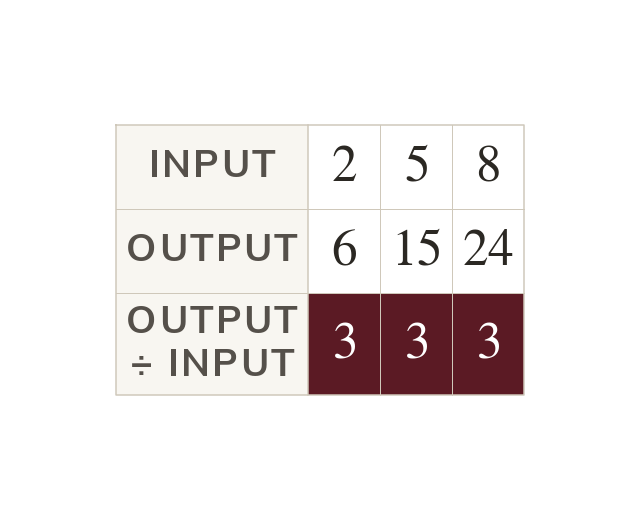
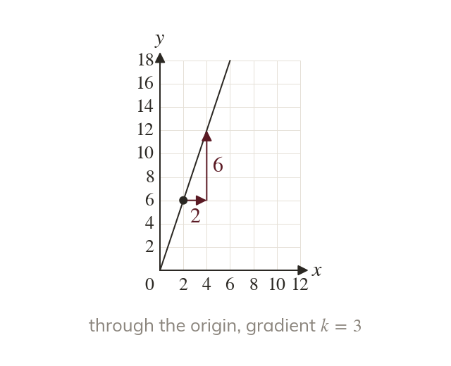
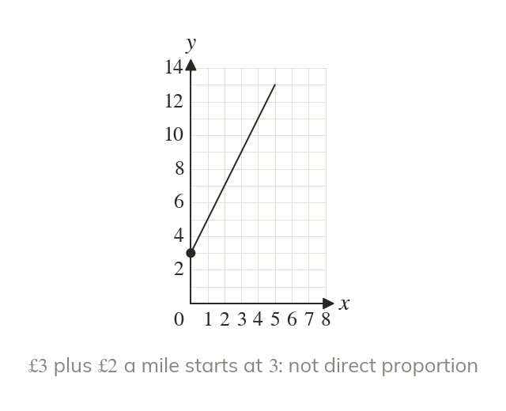
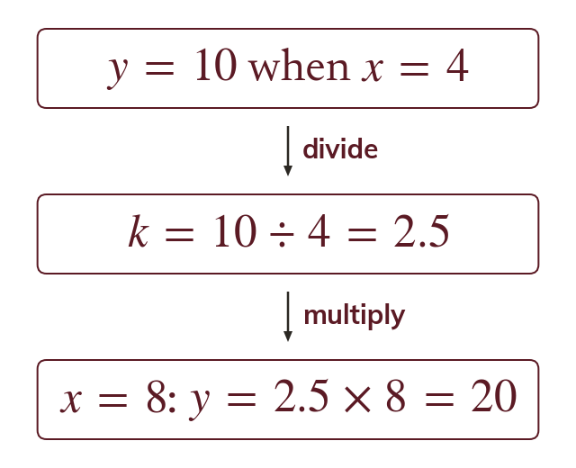
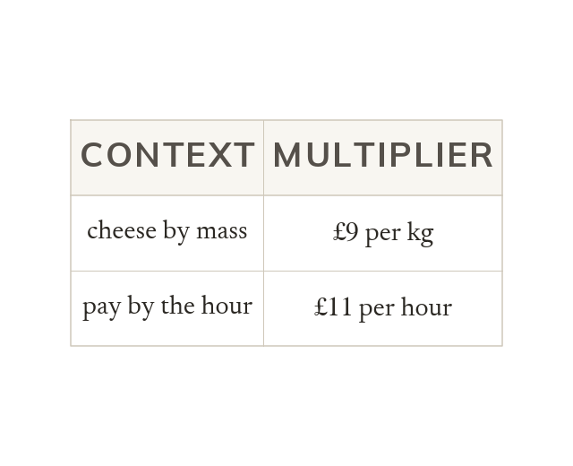

A fixed multiplier
Quantities in direct proportion satisfy = kx for a fixed number k. So the output divided by the input is the same for every pair.
Some quantities grow in step, like pay and hours worked, and some only look as if they do. Today we test for direct proportion and use it.
Work down the page at your own pace. Write every answer in your book first, then click to check it.
Read each card, then follow the worked examples one step at a time.

Quantities in direct proportion satisfy = kx for a fixed number k. So the output divided by the input is the same for every pair.

The graph of a direct proportion is a straight line through the origin. Its gradient is the multiplier

A straight line that misses the origin is not direct proportion. A taxi fare of plus a mile is one.
Pick an answer. If it's wrong, the feedback tells you which mistake it was.
Read each card, then follow the worked examples one step at a time.

Find from one pair, then use If when ,
So gives

In context, k is a rate, such as £ per kilogram. Its units say which quantity it multiplies.
Pick an answer. If it's wrong, the feedback tells you which mistake it was.
Finished? Next lesson: 10.22.2 Inverse Proportion in Context.
Log in, then search for a code to practise that skill.